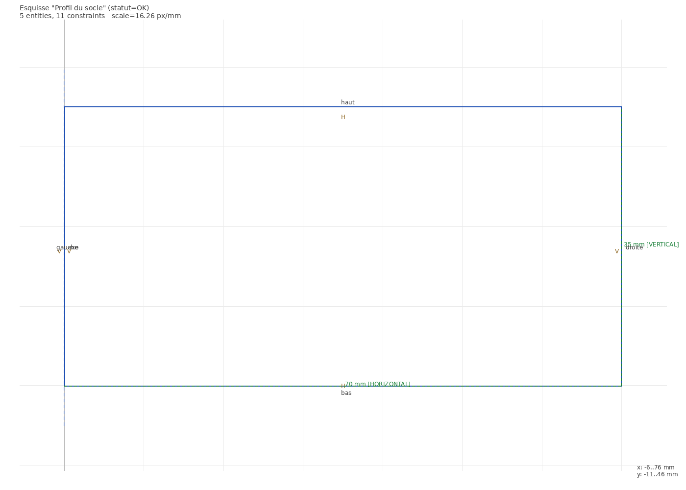
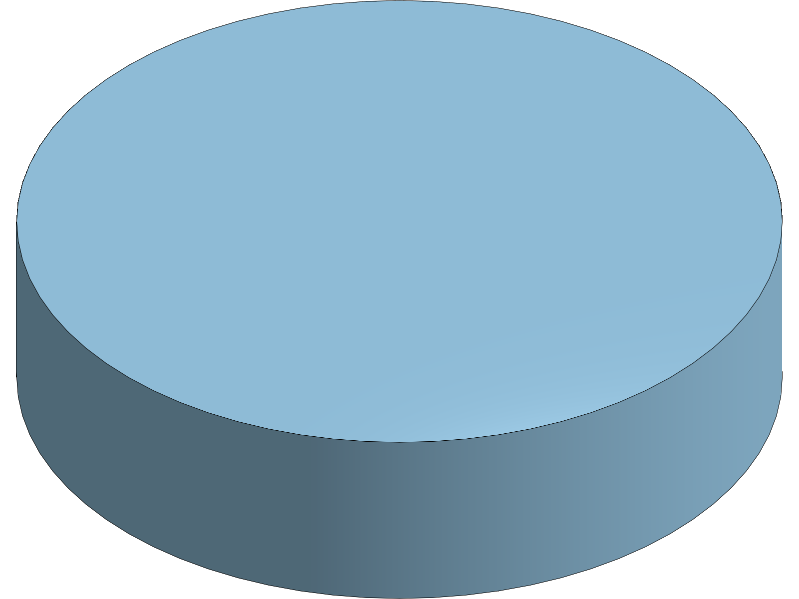
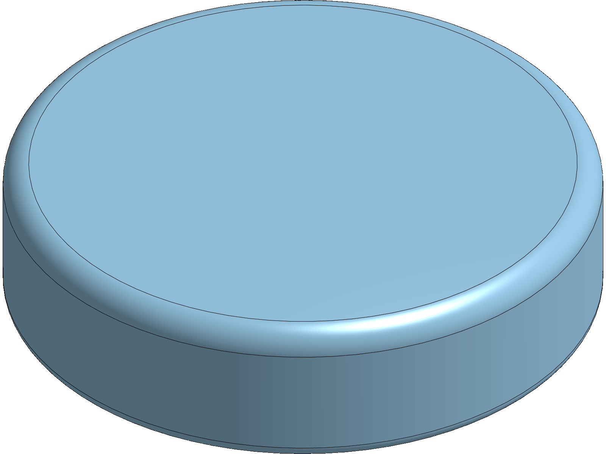
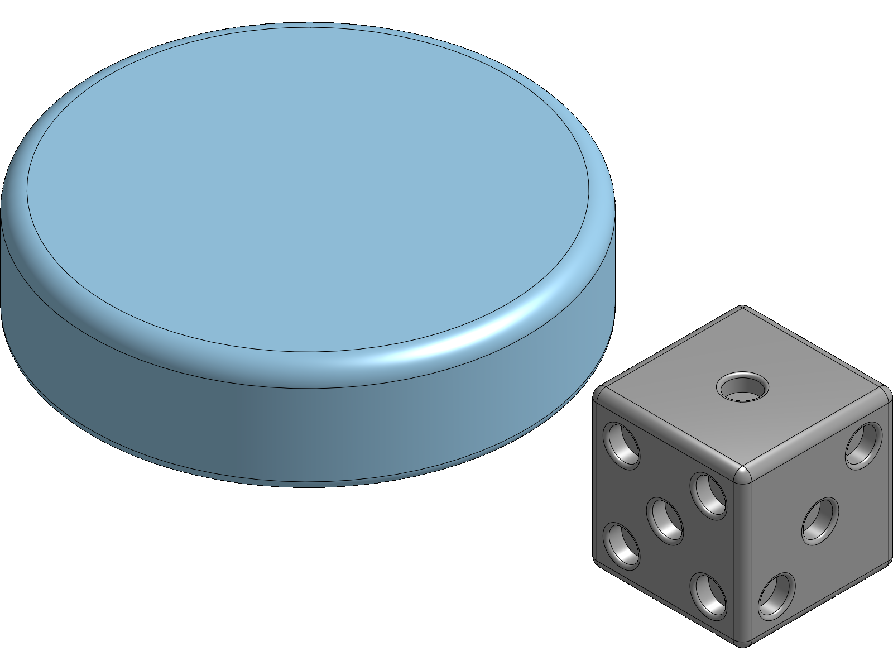
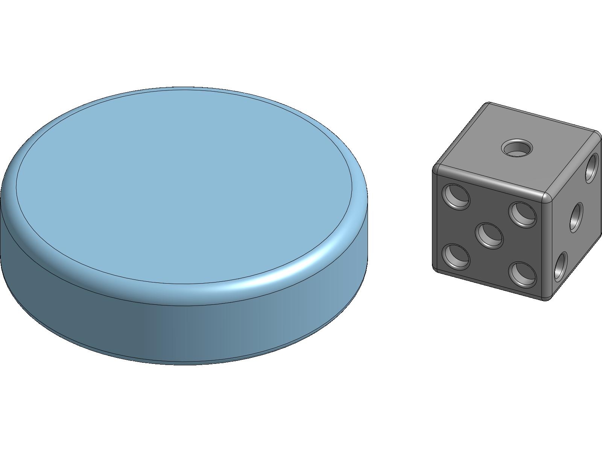
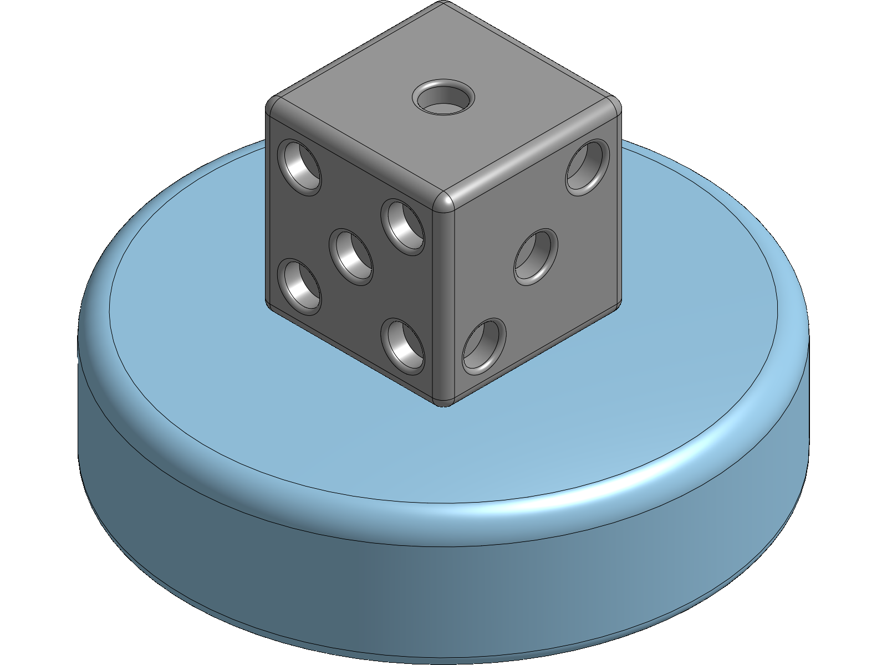
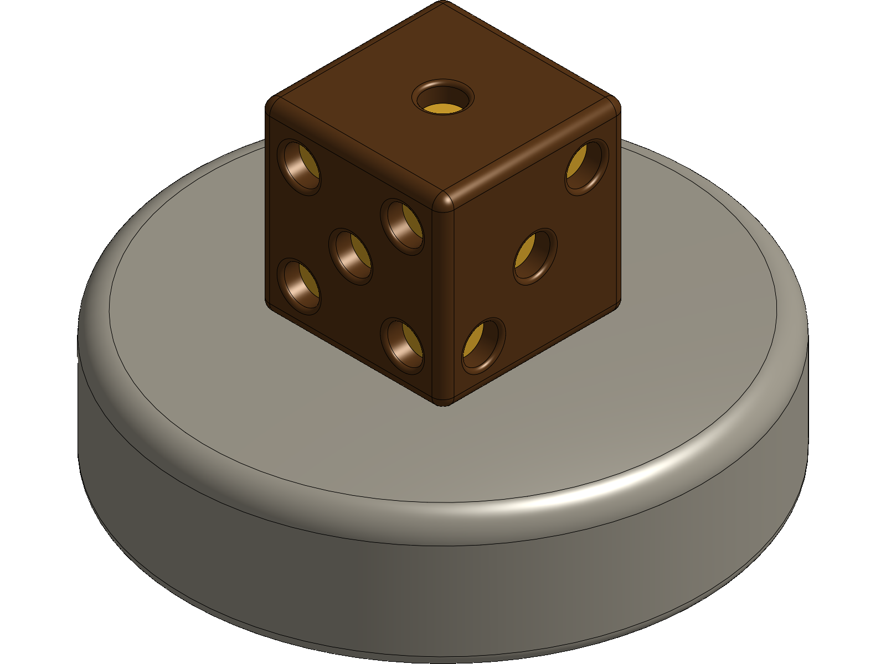

Tu vas tourner un socle mouluré, puis poser ton dé dessus — parfaitement centré, et sans le placer à l'œil. Deux pièces qui se tiennent, c'est un assemblage.
4eOnshape4e_C7.2 · 4e_C7.6Prolonge le TP « Le dé » de 5eNouveau geste : la révolution
🧭 Comment lire ce TP. En clair, ce que tu fais.
En italique coloré, ce que tu dois voir se
produire à l'écran — si tu ne le vois pas, ne continue pas : reprends l'étape.
Les encadrés orange préviennent des pièges. À la fin de chaque partie, une image te montre
ce que tu dois obtenir : compare, tu n'as besoin de personne pour te corriger.
🔄 Ce que tu as déjà fait
L'an dernier, en 5e, tu as construit un dé dans Onshape : tu as esquissé un carré, tu l'as coté, tu l'as extrudé en cube, puis tu as enlevé vingt et un creux et adouci les arêtes. Tu sais donc déjà ouvrir un plan, dessiner, coter, et faire de la matière.
Cette année, deux choses changent. D'abord un nouveau geste : au lieu de pousser une forme en ligne droite, tu vas la faire tourner autour d'un axe — c'est la révolution, et c'est comme ça qu'on obtient tout ce qui est rond. Ensuite, tu ne travailleras plus sur une seule pièce : tu vas en tenir deux ensemble, et dire au logiciel comment elles se touchent.
Tu n'as pas fait le TP du dé ? Ce n'est pas grave : tout ce qu'il faut savoir est rappelé au fur et à mesure, et un dé tout prêt t'attend au palier 5.
Aide détaillée
1 · Ranger avant de commencer
Comme l'an dernier : on range d'abord. Un travail qu'on ne retrouve pas à la séance suivante n'a pas eu lieu — et cette fois il y aura plusieurs onglets dans le même document, raison de plus pour le nommer clairement.
Dans Onshape, clique sur Créer en haut à gauche, puis sur Document.Une petite fenêtre s'ouvre, avec un champ Nom du document déjà sélectionné.
Écris Socle romain — TON NOM, puis valide avec Créer.Le document s'ouvre. En bas de l'écran, un onglet nommé Partie Studio 1 : c'est l'atelier où l'on dessine les pièces.
À savoir avant de commencer : Ne mets pas d'accent ni de barre oblique dans le nom : certains exports les refusent.
Double-clique sur l'onglet Partie Studio 1, en bas, et renomme-le Socle.L'onglet porte maintenant le mot Socle. Tu sauras où tu es quand il y en aura trois.
⚠️ Tu peux mettre le nom que tu veux, tant que tu le comprends dans deux semaines.
🎯 Tu peux passer à la suite quand : Ton document est créé, nommé, et son premier onglet s'appelle Socle.
💾 Enregistre ton travail maintenant. C'est le moment : si le poste redémarre, tu ne perds rien.
Aide détaillée
2 · Le profil du socle — une moitié suffit
Voici l'idée du tour : on ne dessine pas le socle. On dessine seulement sa coupe, d'un seul côté de l'axe — et on demande au logiciel de la faire tourner. C'est exactement le geste du potier.
Clique sur Esquisse dans la barre du haut, puis choisis le plan Avant dans l'arbre à gauche.Le plan se met à plat face à toi, et la barre du haut change : elle affiche maintenant les outils de dessin — ligne, rectangle, cercle.
Avec l'outil Ligne, trace une ligne verticale qui part de l'origine et monte. Elle sera l'axe du tour.La ligne apparaît, et un petit symbole de contrainte verticale s'affiche à côté d'elle.
À savoir avant de commencer : Vise l'origine : le petit point au centre. Quand ton curseur est dessus, il devient orange et la ligne s'y accroche toute seule.
Sélectionne cette ligne, puis clique sur l'outil Construction (l'icône en trait mixte) pour la transformer en ligne de construction.Le trait devient pointillé orangé : il ne fera pas de matière, il ne sert qu'à guider.
À droite de l'axe, trace le profil du socle avec l'outil Ligne : un rectangle large et bas, dont le côté gauche est posé sur l'axe.Le contour se ferme : quand la dernière ligne rejoint la première, l'intérieur se teinte légèrement. C'est le signe que la forme est fermée.
À savoir avant de commencer : Dessine à peu près, sans chercher la précision : on cote juste après. Un profil approximatif qui se ferme vaut mieux qu'un profil précis qui reste ouvert.
Avec l'outil Cote (raccourci d), cote la largeur du profil depuis l'axe : 70.La cote s'affiche et le dessin se redresse d'un coup pour lui obéir.
⚠️ 70 mm depuis l'axe, donc un socle de 140 mm de diamètre une fois tourné. C'est un exemple : tu peux choisir une autre taille, mais garde-la en tête pour la suite.
Cote maintenant la hauteur du profil : 35.Le profil devient entièrement noir. Le noir veut dire : plus rien ne peut bouger, tout est décidé.
À savoir avant de commencer : Tant qu'il reste du bleu, c'est qu'une dimension est encore libre. Ce n'est pas une faute, mais le socle changerait de taille si on le tirait.
Ce que tu dois obtenir :

🎯 Tu peux passer à la suite quand : Ton profil est fermé, entièrement noir, et coté 70 par 35.
💾 Enregistre ton travail maintenant. C'est le moment : si le poste redémarre, tu ne perds rien.
Aide détaillée
3 · La révolution — faire tourner le profil
Le geste nouveau de l'année. En 5e, tu poussais une forme en ligne droite : c'était l'extrusion. Ici tu vas la faire tourner autour de l'axe. Même logique, autre mouvement.
Valide ton esquisse avec la coche verte, puis clique sur Révolution dans la barre du haut.Un panneau Révolution s'ouvre à gauche, avec deux champs à remplir : Faces et esquisses, et Axe de révolution.
Clique dans la zone de dessin sur l'intérieur de ton profil pour remplir le premier champ.Le profil se surligne, et son nom apparaît dans le champ Faces et esquisses.
Clique ensuite dans le champ Axe de révolution, puis sur ta ligne de construction en pointillés.Un aperçu du socle rond apparaît immédiatement dans la zone de dessin. C'est la matière qui tourne.
À savoir avant de commencer : Si rien n'apparaît, c'est que le profil touche l'axe ou le croise. Un profil de révolution doit être posé contre l'axe, jamais à cheval dessus.
Vérifie que l'angle indique 360, puis valide avec la coche verte.Le socle plein apparaît, gris, avec une nouvelle ligne Révolution 1 dans l'arbre à gauche.
⚠️ 360 degrés fait un tour complet. Essaie 180 pour voir : tu obtiens un demi-socle. Reviens ensuite à 360.
Ce que tu dois obtenir :

🎯 Tu peux passer à la suite quand : Un socle cylindrique existe, et l'arbre affiche Révolution 1.
💾 Enregistre ton travail maintenant. C'est le moment : si le poste redémarre, tu ne perds rien.
Aide allégée
4 · La moulure — ce qui fait « romain »
Un socle romain n'a pas d'arêtes vives : il a des moulures, ces bourrelets et ces creux qui font l'ombre. Tu les obtiens avec le geste que tu connais déjà de l'an dernier — le congé.
Clique sur Congé, puis sélectionne l'arête du haut du socle, tout autour.L'arête se surligne en jaune et un aperçu arrondi apparaît.
Règle le rayon à 6 et valide.Le bord supérieur du socle s'arrondit franchement : la lumière glisse dessus au lieu de s'arrêter net.
⚠️ 6 mm est un exemple. Plus le rayon est grand, plus le socle paraît doux ; au-delà de 10 il commence à ressembler à un galet.
Recommence sur l'arête du bas, avec un rayon plus petit : 3.Le pied du socle s'adoucit à son tour, mais moins que le haut.
Ce que tu dois obtenir :

🎯 Tu peux passer à la suite quand : Les deux arêtes circulaires du socle sont arrondies, celle du haut davantage.
💾 Enregistre ton travail maintenant. C'est le moment : si le poste redémarre, tu ne perds rien.
Aide détaillée
5 · Le dé — celui de l'an dernier
Il te faut maintenant une deuxième pièce. Si tu as encore ton dé de 5e, reprends-le. Sinon, un dé tout prêt t'attend — et on ne perdra pas une séance à le refaire.
En bas de l'écran, clique sur le + puis sur Créer un Partie Studio. Renomme-le De.Un deuxième onglet apparaît en bas, vide. Tu as maintenant deux ateliers dans le même document.
Si tu as ton document de 5e : reviens dessus, fais un clic droit sur l'onglet du dé, puis Copier dans, et choisis ce document.Le dé apparaît dans ton nouvel onglet, avec tout son historique de construction.
À savoir avant de commencer : Si tu ne retrouves pas ton document de 5e, ne cherche pas dix minutes : passe à l'étape suivante.
Sinon : ouvre le fichier de_50.step fourni avec le TP, et importe-le dans cet onglet.Le dé apparaît, gris. Il n'a pas d'historique — c'est une pièce importée, on ne peut plus la remonter étape par étape.
⚠️ Un fichier STEP est un échange entre logiciels : il transporte la forme, pas la façon dont on l'a construite. C'est le prix de l'universalité.
Ce que tu dois obtenir :

🎯 Tu peux passer à la suite quand : Ton document contient deux onglets, l'un avec le socle, l'autre avec le dé.
💾 Enregistre ton travail maintenant. C'est le moment : si le poste redémarre, tu ne perds rien.
Aide détaillée
6 · L'assemblage — mettre les deux pièces ensemble
Un assemblage n'est pas un dessin de plus : c'est un endroit où les pièces existantes viennent se rencontrer. On n'y dessine rien, on y place et on y contraint.
En bas, clique sur le + puis sur Créer un assemblage. Renomme-le Presse-papier.Un troisième onglet s'ouvre, vide, et la barre du haut a changé : plus d'outils de dessin, mais Insérer et des icônes de liaison.
À savoir avant de commencer : Si tu vois encore Esquisse et Extrudeur, c'est que tu es resté dans un Partie Studio. Regarde quel onglet est actif en bas.
Clique sur Insérer, choisis le Socle dans la liste, et clique une fois dans la zone de dessin.Le socle apparaît. Dans l'arbre à gauche, il porte une icône de cadenas : la première pièce insérée est fixée d'office.
⚠️ C'est voulu : dans tout assemblage, une pièce sert de référence et ne bouge pas. Ici, ce sera le socle.
Toujours dans Insérer, choisis le De et clique à côté du socle, pas dessus.Le dé apparaît, posé n'importe où. Si tu le tires à la souris, il se déplace librement : rien ne le retient encore.
À savoir avant de commencer : Place-le volontairement à côté. On voit mieux ce que fait une contrainte quand elle a du travail à faire.
Ferme le panneau d'insertion.Deux pièces dans l'arbre : le socle avec son cadenas, le dé sans rien.
Ce que tu dois obtenir :

🎯 Tu peux passer à la suite quand : Les deux pièces sont dans l'assemblage, le socle fixé, le dé libre.
💾 Enregistre ton travail maintenant. C'est le moment : si le poste redémarre, tu ne perds rien.
À toi de jouer
7 · Les contraintes — centrer sans viser
Voilà le cœur de la séance. Placer le dé à l'œil, c'est facile — et c'est faux : au premier zoom on voit qu'il est de travers. Une contrainte ne place pas la pièce, elle interdit un mouvement. C'est le logiciel qui en déduit la position, et elle est exacte.
Clique sur la liaison Fixe dans la barre du haut, puis sur la face du dessous du dé, puis sur la face du dessus du socle.Le dé saute et vient se coller au centre du socle, à plat. Il ne bouge plus quand tu tires dessus.
À savoir avant de commencer : Onshape utilise les connecteurs de position : quand tu survoles une face, il propose un point au centre et un aux coins. Vise le point central, celui qui apparaît au milieu de la face. Et si le dé se retourne ou s'enfonce dans le socle : c'est normal, ça arrive à tout le monde. Le logiciel a aligné les deux repères dans le même sens au lieu de les mettre face à face. Cherche le bouton d'inversion dans le panneau de la liaison — une petite double flèche — et clique-le. Le dé se remet à l'endroit.
Si le dé s'est retourné, clique sur le bouton d'inversion du panneau de liaison.Le dé bascule et se pose à l'endroit sur le socle, sa face du 1 vers le haut.
⚠️ Ce bouton existe parce que le cas est fréquent : deux faces qui se touchent ont des repères opposés, et le logiciel ne peut pas deviner lequel tu veux.
Tourne la vue et regarde le dé par-dessous, puis de côté.Le dé est centré sur l'axe du socle, et sa base touche exactement le dessus du socle : aucun jour, aucun chevauchement.
⚠️ Si ton dé est décalé, c'est que tu as visé un connecteur de coin. Double-clique sur la liaison dans l'arbre pour la refaire.
Ce que tu dois obtenir :

🎯 Tu peux passer à la suite quand : Le dé est centré sur le socle, et il ne bouge plus quand on tire dessus.
💾 Enregistre ton travail maintenant. C'est le moment : si le poste redémarre, tu ne perds rien.
Aide détaillée
8 · Emporter son travail : nommer, exporter, retrouver
Un travail qu'on ne retrouve pas n'a pas eu lieu. Ce dernier palier ne fabrique rien : il met ta pièce à l'abri et te donne le fichier que la machine attend.
Ne cherche pas de bouton Enregistrer : il n'y en a pas.Rien à l'écran ne dit « enregistré ». C'est normal : Onshape sauvegarde en continu, à chaque geste, dans ton compte.
À savoir avant de commencer : Si tu fais Ctrl+S par réflexe, c'est le navigateur qui répond, pas Onshape : il te propose d'enregistrer la page en HTML ou MHTML. Ce fichier ne contient pas ta pièce — seulement l'habillage de l'écran. Annule cette fenêtre. La seule chose qu'il faut penser à faire, c'est nommer le document, et ça se fait une fois pour toutes.
Vérifie le nom du document, en haut à gauche. S'il s'appelle encore « Sans titre », renomme-le maintenant : Dé sur socle - TES INITIALES.Le nom change dans le bandeau du haut.
À savoir avant de commencer : Dans une classe de vingt-huit, vingt-huit fichiers « Part Studio 1 » ne se distinguent pas. Le nom du travail plus tes initiales, c'est ce qui te permettra de retrouver le tien.
Clic droit sur ta pièce dans l'arbre, en bas à gauche, puis Exportateur…Une fenêtre Exportateur s'ouvre, avec un nom de fichier, un format et des options.
À savoir avant de commencer : Le format proposé par défaut est PARASOLID : c'est le format interne d'Onshape, il n'intéresse aucun autre logiciel. Change-le.
Choisis le format STEP.La liste propose une douzaine de formats. Deux comptent pour toi.
⚠️ STL décrit la surface par un maillage de triangles : c'est ce que mange une imprimante 3D, mais la pièce n'y est plus modifiable — on ne peut plus revenir sur une cote. STEP garde la géométrie exacte et s'ouvre dans n'importe quel autre logiciel de CAO. Autrement dit : STL pour fabriquer, STEP pour transmettre. En 4e, tu as deux pièces qui doivent tenir ensemble : STEP conserve l'assemblage et les formes exactes. Exporte aussi en STL si tu veux imprimer.
Dans Options, choisis « Télécharger et stocker le fichier dans un nouvel onglet », puis valide.Le fichier descend dans tes téléchargements, et un onglet supplémentaire apparaît en bas de ton document Onshape.
À savoir avant de commencer : C'est le seul des trois choix qui protège ton travail. Sur un poste de collège, le dossier Téléchargements est souvent vidé, et tu ne repasseras pas forcément sur la même machine : un simple « Télécharger » revient à ne rien garder. Là, le fichier reste attaché au document et te suit.
⚠️ Laisse « Exporter les modèles avec l'axe Y vers le haut » décoché : cette case sert aux logiciels qui n'ont pas la même convention d'orientation.
Pour une simple image — un compte rendu, le cahier de texte — n'exporte rien.Une icône d'appareil photo, dans la barre verticale à droite de la vue 3D, produit un PNG propre du modèle.
À savoir avant de commencer : Un export n'est pas un enregistrement : c'est une traduction de la pièce vers ce qu'une machine ou un autre logiciel sait lire — et chaque traduction perd quelque chose. L'original, celui qui garde l'histoire complète et les cotes modifiables, reste dans Onshape.
🎯 Tu peux passer à la suite quand : ton document porte ton nom, et le fichier exporté apparaît dans un onglet en bas de ton document.
À toi de jouer
9 · 🎁 Ton presse-papier, et pas celui du voisin
Le travail est fini. Ce qui suit ne sert à rien — c'est exactement pour ça qu'on le fait. Et comme l'an dernier sur ton dé : la couleur dit ce que l'objet a l'air d'être, le matériau dit ce dont il est fait. Sur un assemblage, la différence saute aux yeux.
Clic droit sur le socle dans l'arbre, puis Modifier l'apparence. Choisis une teinte de pierre — un gris chaud, un beige.Le socle change de couleur ; le dé, lui, ne bouge pas. Dans un assemblage, chaque pièce garde son apparence.
Donne au dé une matière franchement différente : bronze sombre pour le corps, doré au fond des points, comme l'an dernier.Les deux pièces se lisent d'un coup d'œil, et le dé cesse de se confondre avec son support.
⚠️ Pierre et bronze, marbre blanc et or, ardoise et laiton : le contraste matière-sur-matière est ce qui donne l'air « objet de musée ». Deux gris proches donneront une bouillie, même bien modélisée.
Ouvre les Propriétés de chaque pièce et donne au socle le matériau Bronze, au dé le matériau ABS.Les couleurs ne changent pas, mais les masses annoncées, si. Additionne-les : c'est la masse de ton presse-papier.
À savoir avant de commencer : Un presse-papier doit être lourd, sinon il ne presse rien. Regarde ta masse totale et demande-toi si l'objet ferait le travail. C'est la première fois qu'un chiffre du logiciel te dit si ton objet est réussi.
Oriente la vue comme tu la trouves belle et fais une capture d'écran.Ton presse-papier, en perspective, deux matières et une lumière qui glisse sur les moulures.
⚠️ Garde cette image : c'est elle que tu montreras, pas le fichier.
Ce que tu dois obtenir :

🎯 Tu peux passer à la suite quand : Tes deux pièces ont des apparences distinctes, un matériau chacune, et tu sais dire la masse de ton presse-papier.
💾 Enregistre ton travail maintenant. C'est le moment : si le poste redémarre, tu ne perds rien.
➡ Et maintenant ?
Tu sais ouvrir un plan, esquisser, coter, extruder, enlever de la matière et adoucir une
arête. C'est tout ce qu'il faut pour dessiner l'objet de ton projet.